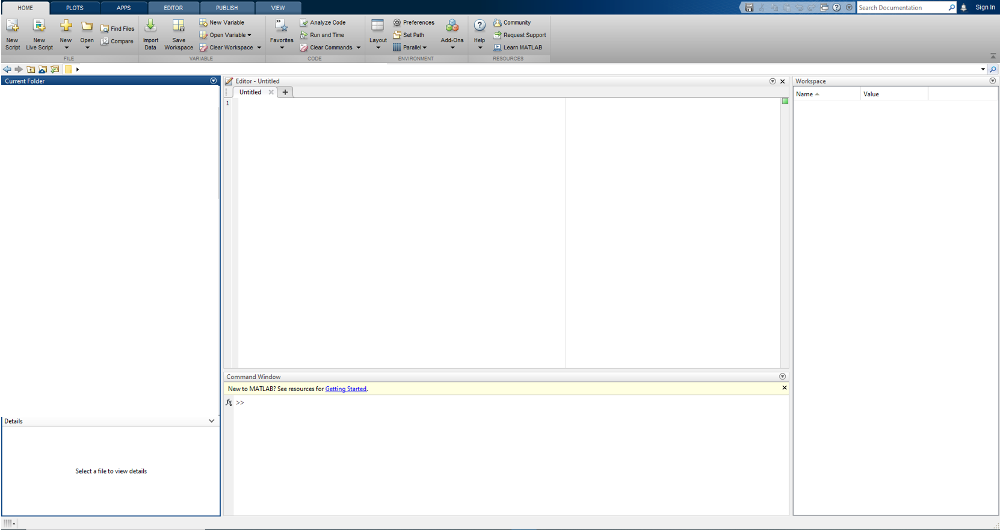
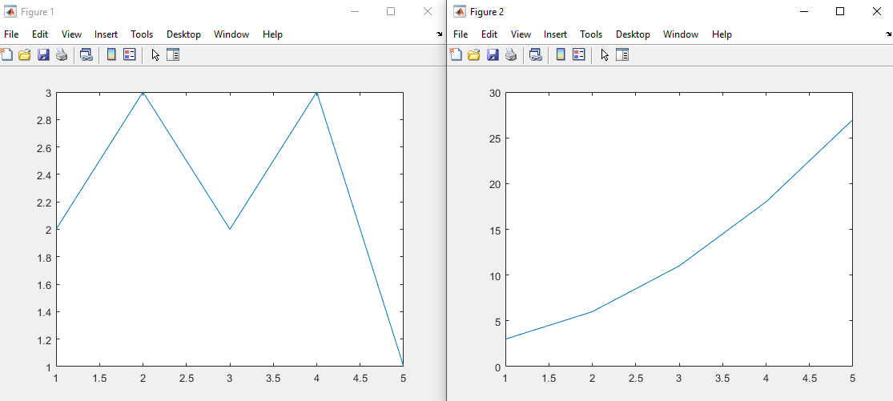
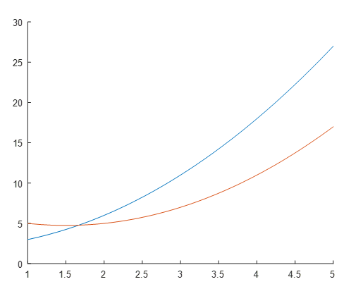
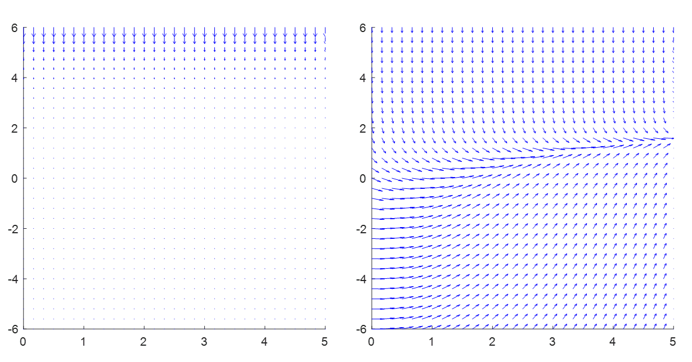
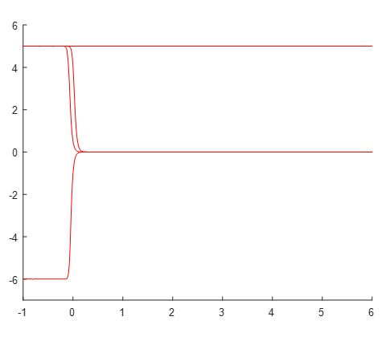
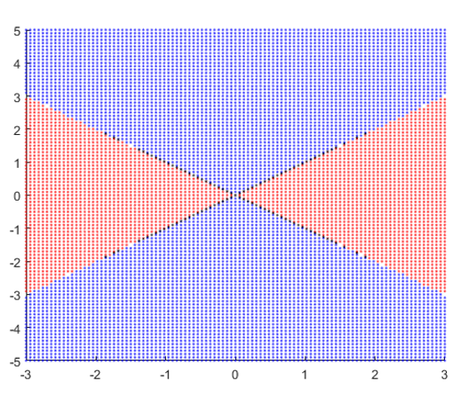
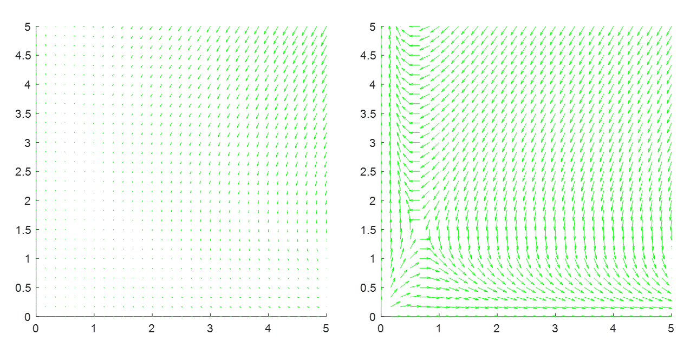
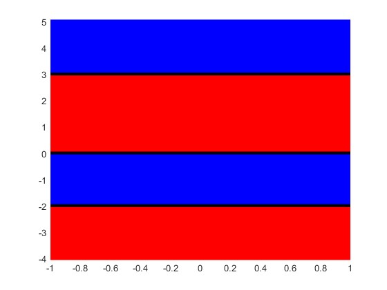
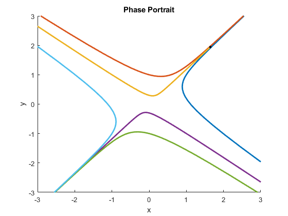

Section A.4 Introduction to MATLAB
This section is meant to provide a review of some of the main skills and techniques in MATLAB that are necessary to complete the various MATLAB assignments throughout the course. In addition, these skills will be useful when attempting to use MATLAB, both for illustrating problems in differential equations and for solving other types of problems that can be analyzed using this software.
Subsection The MATLAB Interface
There are many components to the MATLAB interface, and the way that the window is organized can be fully customized. There are four main components of this interface.
-
Current Folder window. This shows the current folder in which MATLAB is running. This determines what files that MATLAB currently has access to and what functions and methods can be called.
-
Editor window. This is the main code-editing window, where script files can be written, edited, saved, and run.
-
Command window. This is where individual lines of code can be entered to see how they work.
-
Workspace window. This shows a list of all variables that currently exist, as well as their values or sizes.

IMAGE DESCRIPTION HERE
All four of these components are very useful in organizing thoughts and programming practices while using MATLAB. Both the Default layout and Two-Column layout (as of MATLAB R2019b) contain all four of these windows in different locations. Either of these will work for programming in MATLAB, as well as any modifications of them. The current format can be saved using Layout - Save Layout if needed.
Subsection File Structure
The main type of file used in MATLAB is the Script file. These are saved as ‘*.m’ files and can represent both stand-alone executable files and functions that can be called from other scripts. For running simple, one-line expressions or debugging code, the Command Window and the command line prompt can be useful. However, for anything more involved and complicated than that, the script editor should be used instead.
In writing a script file or using the Command window, the Current Folder window shows all of the files in the current directory. These are all of the files that MATLAB has access to while running a MATLAB file that it saved in that folder. This means that if a script wants to call a method, it either needs to be a built-in method or a function file that is contained within the same script file or the Current Folder. For more information about writing functions, see Functions and Anonymous Functions.
To use script files, multiple lines of code can be entered in a row, and MATLAB will execute them in sequence when the “Run” button is clicked. This button is in the “Editor” tab at the top of the screen.
IMAGE DESCRIPTION HERE
MATLAB Live Scripts can also be used to do very similar things, with some additional benefits. These allow the MATLAB code to be viewed side-by-side with the output, as well as an easy export to PDF functionality. These are saved as ‘*.mlx’ files. These work the same way as scripts in terms of how code is written, and allow the user to mix between text (which can be resized and formatted) and code. For more information on Live Scripts, see this website.
Live Scripts also have the ability to put section breaks between different pieces of code and then run individual sections using the “Run Section" button at the top of the editor. With Live Scripts, it is necessary to run the entire code (by clicking the run button) before exporting as a PDF in order to get the correct images and outputs in the final PDF. To export, go to Save at the top of the screen, click the down arrow under it, and select “Export to PDF” after running the code to regenerate all of the images.
IMAGE DESCRIPTION HERE
Subsection Computation in MATLAB
MATLAB can do many of the simple computational operations that would be expected from a calculator. It is easiest to see these operations by using the Command Window, but they can also be implemented in scripts if desired. Addition and subtraction work in standard ways. In the command line, typing
2 + 3
and pressing ENTER will give an output of
ans = 5
showing the answer of this computation. For any computation or line of code, putting a semi-colon (;) at the end will suppress the output, in that typing
2 + 3;
will not show any output. However, MATLAB did do the computation, which can be shown by storing this output in a variable and doing something with it later.
Multiplication and division, and by extension powers, can work differently in MATLAB. As MATLAB is built around using matrices for calculations and is optimized for this approach, the program interprets all multiplication, division, and exponentiation in terms of matrices as a default. Both components of the multiplication are simple scalars (numbers), then this is fine. The ‘*’ symbol works for multiplication in this context:
>> 4*6
ans = 24
as well as using ‘/’ for division and ‘^’ for exponentiation. Issues may arise when the code wants to compute products or powers of multiple values at the same time. Many MATLAB built-in functions will automatically combine multiple of the same type of calculation into a ‘vectorized’ calculation, where if the code wanted to compute the sum of two numbers a bunch of times, it would put all of these numbers into arrays and then add the two vectors together. This completes the task of adding all of the different pairs of numbers together, but saves time by not doing them all individually. This works great for addition and subtraction, because addition and subtraction of arrays or matrices is done element-wise, which is the exact operation we wanted to compute in the first place.
However, mutliplication is different. Matrix multiplication is a different operation that, in particular, is not element-wise multiplication. Beyond that, even if two matrices are the same size, it is possible that their product, in the normal matrix sense, is not defined. In MATLAB, the product
[1 2 3] * [4 3 2];
will return an error because the matrices are not the correct size. From a human point of view, the output desired from this code was likely
[4 6 6], the product of each term individually. To obtain this in MATLAB, we need the elementwise operations ‘.*’, ‘./’ and ‘.^’ for multipication, division, and exponentiation, respectively. Thus, the following computations can be made in MATLAB
>> [1 2 3] .* [4 3 2]
ans =
[4 6 6]
>> [1 4 6].^2
ans =
[1 16 36]
>> [5 4 2] ./ [10 2 6]
ans =
[0.5 2 0.3333]
There are many built-in functions in MATLAB that can help with computation and algebra.
-
exp(x)will compute \(e^x\) for \(e\) the base of the natural logarithm, and \(x\) any number. Note that MATLAB does not know the definition of \(e\) built-in, so it will either need to be defined (usingexp(1)) or just useexp()whenever it is needed. -
log(x)computes the natural logarithm of a number \(x\text{.}\) The functionslog2andlog10compute the log base 2 and log base 10 respectively.
Subsection Variables and Arrays
As with other programming languages, MATLAB utilizes variables to store information and use it later. The name of variables in MATLAB must start with a letter, but the rest of the name can consist of letters, digits, or underscores. Variables should be named suggestively corresponding to what this information is or the way it will be used. Variables do not need to be created in advance, they are created when something is stored in the variable by putting the name on the left side of an equals sign, with the computation that gives rise to that variable on the right. Even though the output is suppressed, the line
val = 2+3;
will store the value 5 in the variable
val, where it can be used later. For example,
>> val * 4
ans =
20
>> val^2 + 2
ans =
27
However, trying to use a variable name without defining it first will cause MATLAB to give an error:
ans = 5
>> r Undefined function or variable ’r’.
As variables do not need to be created or instantiated before they are used, any variable can store any type of information. Two of the most common ones are numbers (double precision) or strings.
numVar = sqrt(15);
strVar = ``Hello World!'';
Strings can be stored using either single or double quotes. Strings also have a lot of useful operations that can be used to make some MATLAB programs run more simply, but they are beyond the scope of this introduction. For information about what can be done with strings, see the MATLAB documentation.
Another common variable data type that MATLAB is very comfortable with is arrays. As described previously, MATLAB defaults to matrices when considering multiplication and exponentiation operations. Arrays can be created using square brackets, with either spaces or commas between the entries.
A = [2,4,6];
B = [1 3 5];
These create horizontal arrays. Vertical arrays can also be created using semi-colons between each entry, and these can be combined with horizontal arrays to create a matrix, or rectangular array of values.
C = [5;7;8];
M = [1,2,3;5,6,7];
In these examples, \(A\) and \(B\) will be row arrays (or row vectors) with 3 elements, \(C\) will be a column vector with \(3\) elements, and \(M\) will be a matrix with two rows and three columns. For most situations that don’t involve matrices, row and column vectors will work equivalently, so either one can be used. Once matrices are involved, it matters which one is chosen, because MATLAB will multiply matrices and vectors in the same way that would be carried out mathematically, which means the dimensions need to match.
To access elements of a matrix, parentheses are used. Unlike other programming languages, MATLAB starts indexing elements at 1, not zero. That is, with the above variables
C(2) = 7, since \(7\) is the second element of the array \(C\text{.}\) In terms of accessing elements of matrices, the first index is the row and the second is the column.
>> M = [1,2,3;5,6,7];
>> M(1,1)
ans =
1
>> M(1,3)
ans =
3
>> M(2,1)
ans =
5
The matrix (and vectors) do have limits on how big they are, and attempting to access an element outside of that range will cause MATLAB to give an error.
>> M(3,1)
Index in position 1 exceeds array bounds (must not exceed 2).
Among many other possible variables, another type that can be stored is a handle to a function. How to use functions will be described in Functions and Anonymous Functions. The fact that all of these different data types can be stored in variables, with no real indication as to which type a given variable is, means it is critical to name variables carefully with what they correspond to.
Subsection Functions and Anonymous Functions
A key component to programming in MATLAB is the idea of functions. These are programming objects that will accept a number of inputs (called arguments) and perform a given set of operations on those arguments, returning some set of ouputs back to the main program. These are mainly used to group code together that has a given purpose and can be called to carry out that purpose on a variety of outputs. An example of a built-in function like this is
sum(V). This function takes in a linear array and will return the number that is the sum of all of the elements in the array (if the array is multi-dimensional, it will only sum along one dimension). This is a piece of code that could be written fairly easily; it would just involve taking the array, looping through it and adding up the value at each index. However, putting it into a function allows it to be called more simply in one line, allowing the main script to focus on the task at hand.
There are two main ways that functions can be written in MATLAB. Functions can either be written at the bottom of the MATLAB script where they will be used or they can be written in their own separate script file. If written in a separate file, there can only be one function in each file, and the name of the file (once saved) must match the name given to the function. To write a function, the reserved word ‘function’ is used:
function [a,b] = testFunction(x, y, z)
% Code here
end
Note: If this is done in a script by itself, the function line must be the first line of the code. There can be no code or comments above this line.
In this case, the function takes in three inputs and returns two outputs. When writing the code inside the function, the three inputs will be called x, y, and z, and in order to tell the program what to send back to wherever this function was called, those outputs should be stored in variables a and b. For example, a function that takes in three numbers and returns their sum in the first output and the product in the second would look like
function [a,b] = testFunction(x, y, z)
a = x+y+z;
b = x*y*z;
end
and that would work just fine. However, if any other MATLAB methods were going to use this function, there is a chance they would try to pass in array inputs. If so, then there would be an error in computing
b, because those products would not be defined. The easiest way to fix this would be to use element-wise products, giving a function that looks like
function [a,b] = testFunction(x, y, z)
a = x+y+z;
b = x.*y.*z;
end
These functions can be as complicated as necessary, including graphs, loops, calls to other functions, and many different components. However, if the function needed is a simple mathematical function, then this can be written in an shorter way with anonymous functions. For example, if the function \(f(x,y) = x^2 + 4xy + y^2\) needed to be coded, it could be written as
f = @(x,y) x.^2 + 4.*x.*y + y.^2;
and this will now make
f a handle to the function that does exactly what is desired. If a later line of code is
>> f(2,1)
ans =
13
the function value will be computed at the desired point. Notice the use of element-wise operations again in this function definition to ensure that it will also work on array inputs. This works for these simple kinds of functions, and can be easier than adding an entire new function to the script file.
Overall, the following two function definitions are almost equivalent.
fShort = @(x,y) x.^2 + y.^2;
function z = fLong(x,y)
z = x.^2 + y.^2;
end
The only difference arises when trying to use these functions in built-in or written methods that require a handle to a function. The ‘@’ symbol at the beginning of the anonymous function indicates that the thing being defined (
fShort) is a handle to a function that takes two inputs and computes an output from it. On the other hand, the definition of fLong is a function that does this, and is not a handle to that function. To fix this, an ‘@’ symbol needs to be put in-front of fLong before using it in one of these methods. As an example ode45 is a method that numerically computes the solution to a differential equation, and it requires a function handle in the first argument. So, the code
ode45(fShort, [0, 3], 1)
runs fine. However,
ode45(fLong, [0, 3], 1)
throws an error about there being not enough inputs for
fLong. This is because whenever MATLAB sees fLong, it is expecting to see two inputs next to it. This is not the case for fShort because of the way it was defined. To remedy this, the code needs to be written
ode45(@fLong, [0, 3], 1)
and then it will execute the same as the first line.
With any of these functions, it is possible to restrict variables and get new functions. This can be fairly easily done with the same setup as for anonymous functions. The line of code
fNew = @(y) fShort(1,y)
will create a new handle for a function of one variable that is
fShort when the \(x\) value is fixed to be 1. The exact same code will work for fLong as you are giving it two inputs.
Subsection Loops and Branching Statements
The code written in a MATLAB script will always proceed in order from one line to the next unless there is some alteration to the flow using loops or branching (if) statements.
Subsubsection For Loops
For loops are a form of iterative programming, where MATLAB will run the same bit of code multiple times with an iterative parameter that can change certain things about the code. If there is an element of the program that needs to carry out a process several times in a row, particularly using the previous step to compute the one after it, a for loop might be the best structure to use. A sample for loop has the following form:
for counter = 1:1:10
% CODE HERE
end
In this line,
counter is the variable that is getting incremented over the list. The rest of that line says that counter starts at 1, increments by 1 each loop, and stops after 10. A line of the form counter = 2:5:34 will start at 2, increment by 5 each loop, and stop once the counter gets above 34, so after the iteration when counter = 32.
In order to loop through an array of values, it is useful to figure out the size of the array and use that to determine how many times the loop should be run. This sort of programming will allow your code to work for a variety of different inputs, no matter the size. This can be done with code like this.
v = [1,2,3,4,5]; % This will be your list of values
for counter = 1:1:length(v)
x = v(counter)^2
end
To find how many elements are in an array, the
length function will work for a linear array. If the array is more complicated, the size function can be used. This will give a list of values saying how large the array is in each dimension.
MATLAB also has
while loops, which allow a loop to run up until a condition becomes false. This is better than for loops in specific situations, but either one can be used. For the code developed here, for loops will be just as easy to write as while loops.
Subsubsection If Statements
If statements, or conditional statements, allow certain parts of code to be executed only if a certain condition is met. For instance, something like
if counter < 5
% CODE HERE
end
will only execute if the counter is less than 5, and
if mod(counter,2) == 0
% CODE HERE
end
will only run if counter is even, that is, if the remainder when dividing counter by 2 is zero. Notice that
== is used for comparison here to check if two things are equal, while = is used for variable assignment. The condition part of an if statement can be anything that gives back a true or false result. For math operations, these can be any inequalities (\(\leq, \ <,\ \geq, \ >\)) or == for testing inequality. The operator \(\sim\) is used for “not”, in that \(a \sim= b\) will be true if \(a\) is not equal to \(b\text{,}\) and false if they are the same. Outside of numbers, there are other MATLAB methods that will give true or false answers. These can be things like comparing strings, but this is beyond the code developed here.
Subsection Plotting in MATLAB
Graphing in MATLAB always involves plotting a set of points, but these can be fairly easily generated from functions as well. For example
xPts = [1,2,3,4,5];
fx = @(x) x.^2 + 2;
yPts = [2,3,2,3,1];
figure(1);
plot(xPts, yPts);
figure(2);
plot(xPts, fx(xPts));

IMAGE DESCRIPTION HERE
will generate two figures, referred to by the lines
figure(1) and figure(2), and allow the two graphs to be simultaneously drawn without overlapping each other. Any time MATLAB draws a plot (with the plot command) it will overwrite any plot that is already on the target figure. In order to put multiple plots on the same figure, the hold on; and hold off; commands can be used.
xPts = linspace(1,5,100);
fx = @(x) x.^2 + 2;
gx = @(x) x.^2 - 3*x + 7;
figure(1);
hold on;
plot(xPts, fx(xPts));
plot(xPts, gx(xPts));
hold off;

IMAGE DESCRIPTION HERE
The
linspace generates a list of 100 equally spaced values between 1 and 5 for plotting purposes. It gives an easy way to generate a lot of input values for plotting a smooth-looking graph. It also emphasizes the need to use the element-wise operations in these functions to make sure they all compute correctly.
There are many additional options that can be passed to the
plot method in order to change the color, shape, and size of the plot. For these options, refer to the MATLAB documentation on the plot function.
Subsection Supplemental Code Files
There are eleven supplemental code files provided. In order to use these files in a script or a Live Script, they must be placed in the same folder as the script file, so that the Current Folder window contains both the file being executed and all of these function files. Another option would be to store all of these function files in a single folder, navigating to that folder in the MATLAB Current Folder window, right-clicking on the folder, and selecting “Add to Path.” The first of these is more recommended, but the second can also work if there is a common repository to store all of the users custom MATLAB functions. The function headers are given below along with a brief description of their use.
function quiver244(f, t_min, t_max, y_min, y_max, col)
% quiver244.m
% Author: Matt Charnley
%
% This function draws a quiver plot for the ODE dy/dt = f(t,y) for
% t_min <= t <= t_max and y_min <= y <= y_max. The function f should be
% passed in as an anonymous function, of two variables or as a function
% handle
%
% The function draws this quiver plot in color col and saves it on the
% current figure, and generates a normalized version
% (all vectors are the same length) as the next figure,
% so that it can be accessed outside of this function.
% For this second figure, the magnitude of the arrows does not mean
% anything, but it is easier to see the direction of them.
% so that it can be accessed outside of this function. It will start with
% hold on; and end with hold off;, so the figure needs to be cleared in the
% main file if needed.
The main point of this function is to simplify the process of drawing quiver plots. The code here takes care of the difficulties that arise from the built-in
quiver function in MATLAB and allows the user to input the right-hand side of a first order ODE and generate quiver plots. It will draw a quiver plot in the first figure, and a normalized quiver plot (all vectors the same length) in the second figure. It can sometimes be easier to see the general trajectory of solutions from the normalized figure, so both graphs are provided. All of the plotting commands use the hold commands so that they will not overwrite anything on the desired figures. This allows the overlaying of multiple plots, but means that the code calling this method must clear the figure if it needs to be cleared.
This code can be used as
f = @(t,y) t - exp(y);
quiver244(f, 0, 5, -6, 6, 'b');
quiver244(@f2, 0, 5, -6, 6, 'b');
function z = f2(t,y)
z = t - exp(y);
end

IMAGE DESCRIPTION HERE
quiver244 function.In each case, the
'b' indicates that the quiver plot will be drawn in blue, and the 1 before that indicates that the two plots will be drawn on figures 1 and 2.
function samplePlots244(f, t_min, t_max, y_min, y_max, t_0, y_0, col)
% This function takes the ODE dy/dt = f(t,y) and plots sample solutions
% with initial value (t_0, y_0). It uses ode45 to sketch out the solutions.
% t_0 must be between t_min and t_max. It also truncates the function f so
% that functions will not go off to infinity, causing this to work properly
% on vector inputs for initial conditions in y. The input y_0 can be a vector
% of initial values, and this function will plot a curve
% for each of those values. If using a vector of initial
% conditions, the function must be written with vector element-wise
% operations.
This function follows the same setup as
quiver244, but draws sample trajectories of the solution instead of the quiver plot. It will take initial conditions as \((t_0, y_0)\text{.}\) For a single \(t_0\text{,}\) a vector of initial \(y_0\) values can be passed in and the function will work correctly. This function can be used as
f = @(t,y) y.*(y-5).*(y+6);
samplePlots244(f, -1, 6, -7, 6, 0, [-1,0.5,4,5], 'r')

IMAGE DESCRIPTION HERE
samplePlots244 function.The
'r' here indicates that this plot will be drawn in red and put on figure 2. If this is combined with the quiver244 method, then it will overlay these red curves on top of the quiver plot drawn on figure 2.
function bifDiag244(f, a_min, a_max, y_min, y_max)
% This function draws a bifurcation diagram for the ode dy/dt = f(alpha, y)
% with parameter alpha running from a_min to a_max. The axes are
% constrained to be from a_min to a_max in the horizontal direction and
% y_min to y_max in the vertical direction.
%
% The black marks are for equilibrium solutions, the blue regions are where
% the solution will tend upwards, and the red region is where it will tend
% downwards.
This function will draw a bifurcation diagram for the given differential equation. Note: This function will need the optimization tool-box add-on for MATLAB in order to run correctly. As with the previous methods, it will not overwrite the figure. Example implementation:
f = @(a,y) y.^2 - a.^2;
bifDiag244(f, -3, 3, -5, 5, 3);

IMAGE DESCRIPTION HERE
bifDiag244 function.function quiver2D244(f,g, x_min, x_max, y_min, y_max, col)
% quiver2D244.m
% Author: Matt Charnley
%
% This function draws a quiver plot for the ODE dx/dt = f(x,y), dy/dt = g(x,y) for
% x_min <= x <= x_max and y_min <= y <= y_max. The functions f and g should be
% passed in as an anonymous functions, f = @(x,y) ...
%
% The function draws this quiver plot in color col in the current figure
% and generates a normalized version (all vectors are the same length)
% as the next figure, so that it can be accessed outside of this function.
% For this second figure, the magnitude of the arrows does not mean
% anything, but it is easier to see the direction of them.
%
% It will start with
% hold on; and end with hold off;, so the figure needs to be cleared in the
% main file if needed.
This function does the same concept as
quiver244 but for the autonomous system of differential equations
\begin{equation*}
\frac{dx}{dt} = f(x,y) \qquad \frac{dy}{dt} = g(x,y).
\end{equation*}
Example implementation:
f = @(x,y) 3.*x - 2.*x.*y;
g = @(x,y) 2.*y - 3.*x.*y;
quiver2D244(f,g, 0, 5, 0, 5, 'g');

IMAGE DESCRIPTION HERE
quiver2D244 function.function phaseLine(f, ymin, ymax)
% This function draws a representation of the phaseline for the
% differential equation dy/dt = f(y). The graph is drawn from ymin to ymax,
% and looks for solutions to f(y) = 0 in that region to find equilibrium
% solutions. This requires the Optimization Toolbox fsolve to run
% correctly.
This function draws a representation of the phase line for an autonomous first order differential equation \(\frac{dy}{dt} = f(y)\) from \(y_{min}\) to \(y_{max}\text{.}\) Example implementation:
f = @(y) y.*(y-3).*(y+2);
phaseLine(f, -4, 5);

IMAGE DESCRIPTION HERE
phaseLine function.function phasePortrait244(F, G, xmin, xmax, ymin, ymax, tmin, tmax, x0, y0)
% This function draws a 2 dimensional phase portrait for the system dx/dt =
% F(x,y) and dy/dt = G(x,y). The phase portrait will be draw with x bounds
% xmin <= x <= xmax and ymin <= y <= ymax. It is assumed that the initial
% conditions x0 and y0 are at $t=0$, with tmin <= 0 and tmax >=0. x0 and y0
% can be inputted as vectors that are the same length, and a sample curve
% will be drawn for each of them. The black dot will always be plotted at tmin.
This function draws a phase portrait for the two-component autonomous system \(\frac{dx}{dt} = F(x,y)\) and \(\frac{dy}{dt} = G(x,y)\text{.}\) The axes are fixed at \(x_{min} \leq x \leq x_{max}\) and \(y_{min} \leq y \leq y_{max}\text{.}\) Solution curves are drawn starting at the (potential list of) points \(x_0\) and \(y_0\text{,}\) and will assume these happen at \(t=0\text{.}\) The curves are drawn from \(t_{min}\) to \(t_{max}\text{,}\) and there will be a black dot plotted at \(t_{min}\) to indicate the direction of flow. Example implementation:
f = @(x,y) 2.*x - 3.* y;
g = @(x,y) -3.*x + y;
phasePortrait244(f, g, -3, 3, -3, 3, -2, 2, [1, 0, -1, 1, 0, -1], [1,1,1,-1,-1,-1]);

IMAGE DESCRIPTION HERE
phasePortrait244 function.function [t, y] = rungeKuttaMethod(f, dt, Tf, T0, y0)
% This method solves the ODE dy/dt = f(t, y) using the Runge Kutta method
% from t=T0 to t = Tf with time step dt and initial condition y0 at t = T0.
% In this case, f should be a function of two variables, t
% (time) and y.
function [t,y] = rungeKuttaSystemMethod(f, T0, Tf, dt, y0)
% This method solves the ODE system dy/dt = f(t, y) using the Runge Kutta method
% from t=T0 to t = Tf with time step dt and initial condition y0 at t = T0.
% In this case, f should be a vector valued function of two variables, t
% (time) and y (n-dimensional vector of unknowns). The length of the vector
% y0 will determine the size of the system.
These two methods use the Runge-Kutta method to numerically solve the differential equation \(\frac{dy}{dt} = f(t,y)\) or the system \(\frac{d\vec{x}}{dt} = F(t, \vec{x})\text{.}\) It will return the list of \(t\) and \(y\) values that are generated by this method.
function [S,I,R] = SIRModel_244(r, c, ICs, Tf)
% This code runs an SIR model for disease spread. The system of differential equations used here is
% S' = -r*S*I
% I' = r*S*I - cI
% R' = c*I
%
% The solution is computed using the RungeKutta method, with the helper
% method rungeKuttaSystemMethod. The system is solved from t=0 to t=Tf,
% with initial conditions ICs given as a 3 component vector.
function [S,I,Q,R,D] = SIRQModel_244(alpha, beta, gamma, delta, eta, rho, ICs, Tf)
% This code runs a more complicated SIR model that adds in Q (a quarantined
% population) and D (a deceased population). The system of differential equations used here is
% S' = -alpha*S*I
% I' = alpha*S*I - (beta+gamma+delta)I
% Q' = beta*I - (eta + rho)Q
% R' = gamma*I + eta*Q
% D' = delta*I + rho*Q
%
% The solution is computed using the RungeKutta method, with the helper
% method rungeKuttaSystemMethod. The system is solved from t=0 to t=Tf,
% with initial conditions ICs given as a 5 component vector.
function [S,I,Q,R,D] = SIRQVModel_244(alpha, beta, gamma, delta, eta, rho, zeta, ICs, Tf)
% This code runs a more complicated SIR model that adds in Q (a quarantined
% population) and D (a deceased population). The V component adds
% vaccination into the picture, where members are moved from S to R
% directly. The system of differential equations used here is
% S' = -alpha*S*I - zeta*S
% I' = alpha*S*I - (beta+gamma+delta)I
% Q' = beta*I - (eta + rho)Q
% R' = gamma*I + eta*Q+zeta*S
% D' = delta*I + rho*Q
%
% The solution is computed using the RungeKutta method, with the helper
% method rungeKuttaSystemMethod. The system is solved from t=0 to t=Tf,
% with initial conditions ICs given as a 5 component vector.
Each of these last three methods use the Runge Kutta method to numerical solve a disease modeling problem with their respective equations. The shared arguments are the initial conditions, which are a three or five component vector depending on the problem type, and the final time \(T_f\text{.}\) The step-size used is one day, and the method will return the list of time-stepped values for each population (every day) from \(t=0\) to \(t=T_f\text{.}\) For \(SIR\text{,}\) the equations are
\begin{equation*}
\frac{dS}{dt} = - rSI \qquad \frac{dI}{dt} = rSI - cI \qquad \frac{dR}{dt} = cI.
\end{equation*}
For SIRQ, the equations are
\begin{align*}
\frac{dS}{dt} \amp = -\alpha SI\\
\frac{dI}{dt} \amp = \alpha SI - \beta I - \gamma I - \delta I\\
\frac{dQ}{dt}\amp = \beta I - \eta Q - \rho Q \\
\frac{dR}{dt} \amp = \gamma I + \eta Q \\
\frac{dD}{dt} \amp = \delta I + \rho Q
\end{align*}
and for SIRQV, it is
\begin{align*}
\frac{dS}{dt} \amp = -\alpha SI- \zeta S \\
\frac{dI}{dt} \amp = \alpha SI - \beta I - \gamma I - \delta I\\
\frac{dQ}{dt} \amp = \beta I - \eta Q - \rho Q \\
\frac{dR}{dt} \amp = \gamma I + \eta Q + \zeta S\\
\frac{dD}{dt} \amp = \delta I + \rho Q\text{.}
\end{align*}
An example implementation is
[S,I,R] = SIRModel_244(0.1, 0.2, [0.99; 0.01; 0], 400);
[S,I,Q,R,D] = SIRQModel_244(0.15, 0.08, 0.02, 0.03, 0.01, 0.04, [0.95; 0.05; 0; 0; 0], 400);
[S,I,Q,R,D] = SIRQVModel_244(0.15, 0.08, 0.02, 0.03, 0.01, 0.04,0.2, [0.95; 0.05; 0; 0; 0], 400);